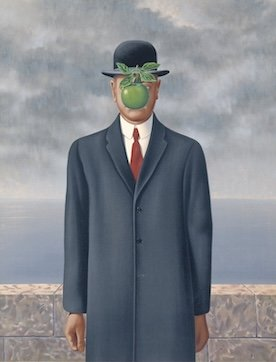

The Son of Man
René Magritte · 1964 · Oil on canvas · 116 × 89 cm · Private collection
In copyright. Look and learn: shown for study, not for download.
Magritte painted this as a self-portrait in 1964, when he was sixty-five, three years before his death. The man's left arm appears to bend backwards at the elbow. Magritte sold it to Harry Torczyner in August 1964, and in 1998 Christie's sold it to a private collector for $5,392,500. It goes on public view only on loan; its most recent showing was at SFMOMA in 2018.